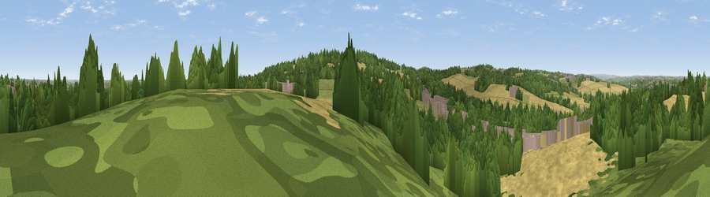

Viewpoint near Hollingthorpe
#32636 in England · top 61% of its area beats it · near HollingthorpeWhere it is
The exact computed spot (SE 30825 15325). Click the marker for map links.
The view, rendered

A 360° render of this exact spot computed from the terrain model, tree cover and land cover — summer colours, afternoon light, calibrated against photographs of famous viewpoints. Real trees, hedges and buildings will differ in detail.
The panorama
Grey silhouette: terrain skyline in each direction (720 bearings, Earth curvature and refraction included). Dashed green: skyline with trees (+15 m) and buildings (+8 m) as obstacles. Blue strip: how far the ground is visible on each bearing.
Where the view opens
Wedge length = distance to the farthest visible ground on that bearing (vegetation-aware). Rings at 10, 25 and 50 km.
What fills the view
37% woodland · 37% cropland · 16% grassland · 10% built-up
Angular shares of the visible panorama (visual magnitude), not map area. Landscape diversity 0.55 (0–1 Shannon).
Key numbers
More beautiful places nearby
The staircase of upgrades: each row has a higher view potential than everything closer. Driving times are estimates from straight-line distance, calibrated against real road routing — check an actual route before setting out.
| Place | Direction | Drive | Score |
|---|---|---|---|
| Viewpoint near West Bretton | W · 2 km | ~6 min | 50.6 |
| Viewpoint near Woolley | S · 3 km | ~6 min | 66.5 |
| Viewpoint near Woolley | SSE · 3 km | ~8 min | 67.9 |
| Viewpoint near Grange Moor | W · 8 km | ~16 min | 69.8 |
| Viewpoint near Hoylandswaine | SSW · 12 km | ~22 min | 71.8 |
| Viewpoint near Hoylandswaine | SSW · 12 km | ~22 min | 72.7 |
| Viewpoint near Jackson Bridge | WSW · 15 km | ~27 min | 73.5 |
| Viewpoint near Wharncliffe Side | S · 19 km | ~32 min | 75.0 |
53.63355, -1.53532 · source: screening · position refined by local search. Computed location — check access rights before visiting.